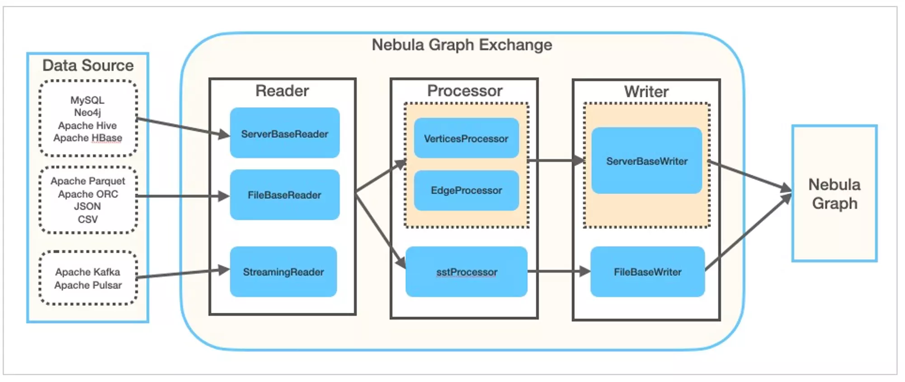

这篇文章带大家以最小方式，快速趟一下 Nebula Exchange 中 SST 写入方式的步骤。
什么是 Nebula Exchange ?
之前我在 Nebula Data Import Options 之中介绍过，Nebula Exchange 是一个 Nebula Graph 社区开源的 Spark Applicaiton，它专门用来支持批量或者流式地把数据导入 Nebula Graph Database 之中。
Nebula Exchange 支持多种多样的数据源（从 Apache Parquet, ORC, JSON, CSV, HBase, Hive MaxCompute 到 Neo4j, MySQL, ClickHouse, 再有 Kafka, Pulsar，更多的数据源也在不断增加之中）。

如上图所示，在 Exchange 内部，从除了不同 Reader 可以读取不同数据源之外，在数据经过 Processor 处理之后通过 Writer写入（sink） Nebula Graph 图数据库的时候，除了走正常的 ServerBaseWriter 的写入流程之外，它还可以绕过整个写入流程，利用 Spark 的计算能力并行生成底层 RocksDB 的 SST 文件，从而实现超高性能的数据导入，这个 SST 文件导入的场景就是本文带大家上手熟悉的部分。
详细信息请参阅：Nebula Graph 手册:什么是 Nebula Exchange
Nebula Graph 官方博客也有更多 Nebula Exchange 的实践文章
步骤概观
实验环境准备
为了最小化使用 Nebula Exchange 的 SST 功能，我们需要：
- 搭建一个 Nebula Graph 集群，创建导入数据的 Schema，我们选择使用 Docker-Compose 方式、利用 Nebula-Up 快速部署，并简单修改其网络，以方便同样容器化的 Exchange 程序对其访问。
- 搭建容器化的 Spark 运行环境
- 搭建容器化的 HDFS
1. 搭建 Nebula Graph 集群
借助于 Nebula-Up 我们可以在 Linux 环境下一键部署一套 Nebula Graph 集群：
1
|
curl -fsSL nebula-up.siwei.io/install.sh | bash
|

待部署成功之后，我们需要对环境做一些修改，这里我做的修改其实就是两点：
- 只保留一个 metaD 服务
- 起用 Docker 的外部网络
详细修改的部分参考附录一
应用 docker-compose 的修改：
1
2
3
4
|
cd ~/.nebula-up/nebula-docker-compose
vim docker-compose.yaml # 参考附录一
docker network create nebula-net # 需要创建外部网络
docker-compose up -d --remove-orphans
|
之后，我们来创建要测试的图空间，并创建图的 Schema，为此，我们可以利用 nebula-console ，同样，Nebula-Up 里自带了容器化的 nebula-console。
1
2
|
~/.nebula-up/console.sh
/ #
|
- 在 console 容器里发起链接到图数据库，其中
192.168.x.y 是我所在的 Linux VM 的第一个网卡地址，请换成您的
1
2
3
4
|
/ # nebula-console -addr 192.168.x.y -port 9669 -user root -p password
[INFO] connection pool is initialized successfully
Welcome to Nebula Graph!
|
- 创建图空间（我们起名字叫
sst ），以及 schema
1
2
3
4
|
create space sst(partition_num=5,replica_factor=1,vid_type=fixed_string(32));
:sleep 20
use sst
create tag player(name string, age int);
|
示例输出
1
2
3
4
5
6
7
8
9
10
11
12
13
14
|
(root@nebula) [(none)]> create space sst(partition_num=5,replica_factor=1,vid_type=fixed_string(32));
Execution succeeded (time spent 1468/1918 us)
(root@nebula) [(none)]> :sleep 20
(root@nebula) [(none)]> use sst
Execution succeeded (time spent 1253/1566 us)
Wed, 18 Aug 2021 08:18:13 UTC
(root@nebula) [sst]> create tag player(name string, age int);
Execution succeeded (time spent 1312/1735 us)
Wed, 18 Aug 2021 08:18:23 UTC
|
2. 搭建容器化的 Spark 环境
利用 big data europe 做的工作，这个过程非常容易。
值得注意的是：
- 现在的 Nebula Exchange 对 Spark 的版本有要求，在现在的 2021 年 8 月，我是用了 spark-2.4.5-hadoop-2.7 的版本。
- 为了方便，我让 Spark 运行在 Nebula Graph 相同的机器上，并且指定了运行在同一个 Docker 网络下
1
2
3
|
docker run --name spark-master --network nebula-net \
-h spark-master -e ENABLE_INIT_DAEMON=false -d \
bde2020/spark-master:2.4.5-hadoop2.7
|
然后，我们就可以进入到环境中了：
1
|
docker exec -it spark-master bash
|
进到 Spark 容器中之后，可以像这样安装 maven:
1
2
3
4
5
6
7
8
|
export MAVEN_VERSION=3.5.4
export MAVEN_HOME=/usr/lib/mvn
export PATH=$MAVEN_HOME/bin:$PATH
wget http://archive.apache.org/dist/maven/maven-3/$MAVEN_VERSION/binaries/apache-maven-$MAVEN_VERSION-bin.tar.gz && \
tar -zxvf apache-maven-$MAVEN_VERSION-bin.tar.gz && \
rm apache-maven-$MAVEN_VERSION-bin.tar.gz && \
mv apache-maven-$MAVEN_VERSION /usr/lib/mvn
|
还可以这样在容器里下载 nebula-exchange 的 jar 包：
1
2
|
cd ~
wget https://repo1.maven.org/maven2/com/vesoft/nebula-exchange/2.1.0/nebula-exchange-2.1.0.jar
|
3. 搭建容器化的 HDFS
同样借助 big-data-euroupe 的工作，这非常简单，不过我们要做一点修改，让它的 docker-compose.yml 文件里使用 nebula-net 这个之前创建的 Docker 网络。
详细修改的部分参考附录二
1
2
3
4
|
git clone https://github.com/big-data-europe/docker-hadoop.git
cd docker-hadoop
vim docker-compose.yml
docker-compose up -d
|
配置Exchange
这个配置主要填入的信息就是 Nebula Graph 集群本身和将要写入数据的 Space Name，以及数据源相关的配置（这里我们用 csv 作为例子），最后再配置输出（sink）为 sst
- Nebula Graph
- GraphD 地址
- MetaD 地址
- credential
- Space Name
- 数据源
详细的配置参考附录二
注意，这里 metaD 的地址可以这样获取，可以看到 0.0.0.0:49377->9559 表示 49377 是外部的地址。
1
2
|
$ docker ps | grep meta
887740c15750 vesoft/nebula-metad:v2.0.0 "./bin/nebula-metad …" 6 hours ago Up 6 hours (healthy) 9560/tcp, 0.0.0.0:49377->9559/tcp, :::49377->9559/tcp, 0.0.0.0:49376->19559/tcp, :::49376->19559/tcp, 0.0.0.0:49375->19560/tcp, :::49375->19560/tcp nebula-docker-compose_metad0_1
|
生成SST文件
1. 准备源文件、配置文件
1
2
|
docker cp exchange-sst.conf spark-master:/root/
docker cp player.csv spark-master:/root/
|
其中 player.csv 的例子：
1
2
3
4
5
6
7
8
9
10
11
12
|
1100,Tim Duncan,42
1101,Tony Parker,36
1102,LaMarcus Aldridge,33
1103,Rudy Gay,32
1104,Marco Belinelli,32
1105,Danny Green,31
1106,Kyle Anderson,25
1107,Aron Baynes,32
1108,Boris Diaw,36
1109,Tiago Splitter,34
1110,Cory Joseph,27
1111,David West,38
|
2. 执行 exchange 程序
进入 spark-master 容器，提交执行 exchange 应用。
1
2
3
4
5
|
docker exec -it spark-master bash
cd /root/
/spark/bin/spark-submit --master local \
--class com.vesoft.nebula.exchange.Exchange nebula-exchange-2.1.0.jar\
-c exchange-sst.conf
|
检查执行结果：
spark-submit 输出：
1
2
3
4
5
6
7
8
|
21/08/17 03:37:43 INFO TaskSetManager: Finished task 31.0 in stage 2.0 (TID 33) in 1093 ms on localhost (executor driver) (32/32)
21/08/17 03:37:43 INFO TaskSchedulerImpl: Removed TaskSet 2.0, whose tasks have all completed, from pool
21/08/17 03:37:43 INFO DAGScheduler: ResultStage 2 (foreachPartition at VerticesProcessor.scala:179) finished in 22.336 s
21/08/17 03:37:43 INFO DAGScheduler: Job 1 finished: foreachPartition at VerticesProcessor.scala:179, took 22.500639 s
21/08/17 03:37:43 INFO Exchange$: SST-Import: failure.player: 0
21/08/17 03:37:43 WARN Exchange$: Edge is not defined
21/08/17 03:37:43 INFO SparkUI: Stopped Spark web UI at http://spark-master:4040
21/08/17 03:37:43 INFO MapOutputTrackerMasterEndpoint: MapOutputTrackerMasterEndpoint stopped!
|
验证 HDFS 上生成的 SST 文件：
1
2
3
4
5
6
7
8
9
10
11
12
13
14
|
docker exec -it namenode /bin/bash
root@2db58903fb53:/# hdfs dfs -ls /sst
Found 10 items
drwxr-xr-x - root supergroup 0 2021-08-17 03:37 /sst/1
drwxr-xr-x - root supergroup 0 2021-08-17 03:37 /sst/10
drwxr-xr-x - root supergroup 0 2021-08-17 03:37 /sst/2
drwxr-xr-x - root supergroup 0 2021-08-17 03:37 /sst/3
drwxr-xr-x - root supergroup 0 2021-08-17 03:37 /sst/4
drwxr-xr-x - root supergroup 0 2021-08-17 03:37 /sst/5
drwxr-xr-x - root supergroup 0 2021-08-17 03:37 /sst/6
drwxr-xr-x - root supergroup 0 2021-08-17 03:37 /sst/7
drwxr-xr-x - root supergroup 0 2021-08-17 03:37 /sst/8
drwxr-xr-x - root supergroup 0 2021-08-17 03:37 /sst/9
|
写入SST到NebulaGraph
这里的操作实际上都是参考文档：SST 导入，得来。其中就是从 console 之中执行了两步操作：
其中 Download 实际上是触发 Nebula Graph 从服务端发起 HDFS Client 的 download，获取 HDFS 上的 SST 文件，然后放到 storageD 能访问的本地路径下，这里，需要我们在服务端部署 HDFS 的依赖。因为我们是最小实践，我就偷懒手动做了这个 Download 的操作。
1. 手动下载
这里边手动下载我们就要知道 Nebula Graph 服务端下载的路径，实际上是 /data/storage/nebula/<space_id>/download/，这里的 Space ID 需要手动获取一下：
这个例子里，我们的 Space Name 是 sst，而 Space ID 是 49。
1
2
3
4
5
6
|
(root@nebula) [sst]> DESC space sst
+----+-------+------------------+----------------+---------+------------+--------------------+-------------+-----------+
| ID | Name | Partition Number | Replica Factor | Charset | Collate | Vid Type | Atomic Edge | Group |
+----+-------+------------------+----------------+---------+------------+--------------------+-------------+-----------+
| 49 | "sst" | 10 | 1 | "utf8" | "utf8_bin" | "FIXED_STRING(32)" | "false" | "default" |
+----+-------+------------------+----------------+---------+------------+--------------------+-------------+-----------+
|
于是，下边的操作就是手动把 SST 文件从 HDFS 之中 get 下来，再拷贝到 storageD 之中。
1
2
3
4
5
6
7
8
9
10
11
|
docker exec -it namenode /bin/bash
$ hdfs dfs -get /sst /sst
exit
docker cp namenode:/sst .
docker exec -it nebula-docker-compose_storaged0_1 mkdir -p /data/storage/nebula/49/download/
docker exec -it nebula-docker-compose_storaged1_1 mkdir -p /data/storage/nebula/49/download/
docker exec -it nebula-docker-compose_storaged2_1 mkdir -p /data/storage/nebula/49/download/
docker cp sst nebula-docker-compose_storaged0_1:/data/storage/nebula/49/download/
docker cp sst nebula-docker-compose_storaged1_1:/data/storage/nebula/49/download/
docker cp sst nebula-docker-compose_storaged2_1:/data/storage/nebula/49/download/
|
2. SST 文件导入
1
2
|
~/.nebula-up/console.sh
/ #
|
- 在 console 容器里发起链接到图数据库，其中
192.168.x.y 是我所在的 Linux VM 的第一个网卡地址，请换成您的
1
2
3
4
|
/ # nebula-console -addr 192.168.x.y -port 9669 -user root -p password
[INFO] connection pool is initialized successfully
Welcome to Nebula Graph!
|
- 执行
INGEST 开始让 StorageD 读取 SST 文件
1
2
|
(root@nebula) [(none)]> use sst
(root@nebula) [sst]> INGEST;
|
我们可以用如下方法实时查看 Nebula Graph 服务端的日志
1
|
tail -f ~/.nebula-up/nebula-docker-compose/logs/*/*
|
成功的 INGEST 日志：
1
2
|
I0817 08:03:28.611877 169 EventListner.h:96] Ingest external SST file: column family default, the external file path /data/storage/nebula/49/download/8/8-6.sst, the internal file path /data/storage/nebula/49/data/000023.sst, the properties of the table: # data blocks=1; # entries=1; # deletions=0; # merge operands=0; # range deletions=0; raw key size=48; raw average key size=48.000000; raw value size=40; raw average value size=40.000000; data block size=75; index block size (user-key? 0, delta-value? 0)=66; filter block size=0; (estimated) table size=141; filter policy name=N/A; prefix extractor name=nullptr; column family ID=N/A; column family name=N/A; comparator name=leveldb.BytewiseComparator; merge operator name=nullptr; property collectors names=[]; SST file compression algo=Snappy; SST file compression options=window_bits=-14; level=32767; strategy=0; max_dict_bytes=0; zstd_max_train_bytes=0; enabled=0; ; creation time=0; time stamp of earliest key=0; file creation time=0;
E0817 08:03:28.611912 169 StorageHttpIngestHandler.cpp:63] SSTFile ingest successfully
|
题图版权：Pietro Jeng
附录
附录一
docker-compose.yaml
1
2
3
4
5
6
7
8
9
10
11
12
13
14
15
16
17
18
19
20
21
22
23
24
25
26
27
28
29
30
31
32
33
34
35
36
37
38
39
40
41
42
43
44
45
46
47
48
49
50
51
52
53
54
55
56
57
58
59
60
61
62
63
64
65
66
67
68
69
70
71
72
73
74
75
76
77
78
79
80
81
82
83
84
85
86
87
88
89
90
91
92
93
94
95
96
97
98
99
100
101
102
103
104
105
106
107
108
109
110
111
112
113
114
115
116
117
118
119
120
121
122
123
124
125
126
127
128
129
130
131
132
133
134
135
136
137
138
139
140
141
142
143
144
145
146
147
148
149
150
151
152
153
154
155
156
157
158
159
160
161
162
163
164
165
166
167
168
169
170
171
172
173
174
175
176
177
178
179
180
181
182
183
184
185
186
187
188
189
190
191
192
193
194
195
196
197
198
199
200
201
202
203
204
205
206
207
208
209
210
211
212
213
|
diff --git a/docker-compose.yaml b/docker-compose.yaml
index 48854de..cfeaedb 100644
--- a/docker-compose.yaml
+++ b/docker-compose.yaml
@@ -6,11 +6,13 @@ services:
USER: root
TZ: "${TZ}"
command:
- - --meta_server_addrs=metad0:9559,metad1:9559,metad2:9559
+ - --meta_server_addrs=metad0:9559
- --local_ip=metad0
- --ws_ip=metad0
- --port=9559
- --ws_http_port=19559
+ - --ws_storage_http_port=19779
- --data_path=/data/meta
- --log_dir=/logs
- --v=0
@@ -34,81 +36,14 @@ services:
cap_add:
- SYS_PTRACE
- metad1:
- image: vesoft/nebula-metad:v2.0.0
- environment:
- USER: root
- TZ: "${TZ}"
- command:
- - --meta_server_addrs=metad0:9559,metad1:9559,metad2:9559
- - --local_ip=metad1
- - --ws_ip=metad1
- - --port=9559
- - --ws_http_port=19559
- - --data_path=/data/meta
- - --log_dir=/logs
- - --v=0
- - --minloglevel=0
- healthcheck:
- test: ["CMD", "curl", "-sf", "http://metad1:19559/status"]
- interval: 30s
- timeout: 10s
- retries: 3
- start_period: 20s
- ports:
- - 9559
- - 19559
- - 19560
- volumes:
- - ./data/meta1:/data/meta
- - ./logs/meta1:/logs
- networks:
- - nebula-net
- restart: on-failure
- cap_add:
- - SYS_PTRACE
-
- metad2:
- image: vesoft/nebula-metad:v2.0.0
- environment:
- USER: root
- TZ: "${TZ}"
- command:
- - --meta_server_addrs=metad0:9559,metad1:9559,metad2:9559
- - --local_ip=metad2
- - --ws_ip=metad2
- - --port=9559
- - --ws_http_port=19559
- - --data_path=/data/meta
- - --log_dir=/logs
- - --v=0
- - --minloglevel=0
- healthcheck:
- test: ["CMD", "curl", "-sf", "http://metad2:19559/status"]
- interval: 30s
- timeout: 10s
- retries: 3
- start_period: 20s
- ports:
- - 9559
- - 19559
- - 19560
- volumes:
- - ./data/meta2:/data/meta
- - ./logs/meta2:/logs
- networks:
- - nebula-net
- restart: on-failure
- cap_add:
- - SYS_PTRACE
-
storaged0:
image: vesoft/nebula-storaged:v2.0.0
environment:
USER: root
TZ: "${TZ}"
command:
- - --meta_server_addrs=metad0:9559,metad1:9559,metad2:9559
+ - --meta_server_addrs=metad0:9559
- --local_ip=storaged0
- --ws_ip=storaged0
- --port=9779
@@ -119,8 +54,8 @@ services:
- --minloglevel=0
depends_on:
- metad0
- - metad1
- - metad2
healthcheck:
test: ["CMD", "curl", "-sf", "http://storaged0:19779/status"]
interval: 30s
@@ -146,7 +81,7 @@ services:
USER: root
TZ: "${TZ}"
command:
- - --meta_server_addrs=metad0:9559,metad1:9559,metad2:9559
+ - --meta_server_addrs=metad0:9559
- --local_ip=storaged1
- --ws_ip=storaged1
- --port=9779
@@ -157,8 +92,8 @@ services:
- --minloglevel=0
depends_on:
- metad0
- - metad1
- - metad2
healthcheck:
test: ["CMD", "curl", "-sf", "http://storaged1:19779/status"]
interval: 30s
@@ -184,7 +119,7 @@ services:
USER: root
TZ: "${TZ}"
command:
- - --meta_server_addrs=metad0:9559,metad1:9559,metad2:9559
+ - --meta_server_addrs=metad0:9559
- --local_ip=storaged2
- --ws_ip=storaged2
- --port=9779
@@ -195,8 +130,8 @@ services:
- --minloglevel=0
depends_on:
- metad0
- - metad1
- - metad2
healthcheck:
test: ["CMD", "curl", "-sf", "http://storaged2:19779/status"]
interval: 30s
@@ -222,17 +157,19 @@ services:
USER: root
TZ: "${TZ}"
command:
- - --meta_server_addrs=metad0:9559,metad1:9559,metad2:9559
+ - --meta_server_addrs=metad0:9559
- --port=9669
- --ws_ip=graphd
- --ws_http_port=19669
+ - --ws_meta_http_port=19559
- --log_dir=/logs
- --v=0
- --minloglevel=0
depends_on:
- metad0
- - metad1
- - metad2
healthcheck:
test: ["CMD", "curl", "-sf", "http://graphd:19669/status"]
interval: 30s
@@ -257,17 +194,19 @@ services:
USER: root
TZ: "${TZ}"
command:
- - --meta_server_addrs=metad0:9559,metad1:9559,metad2:9559
+ - --meta_server_addrs=metad0:9559
- --port=9669
- --ws_ip=graphd1
- --ws_http_port=19669
+ - --ws_meta_http_port=19559
- --log_dir=/logs
- --v=0
- --minloglevel=0
depends_on:
- metad0
- - metad1
- - metad2
healthcheck:
test: ["CMD", "curl", "-sf", "http://graphd1:19669/status"]
interval: 30s
@@ -292,17 +231,21 @@ services:
USER: root
TZ: "${TZ}"
command:
- - --meta_server_addrs=metad0:9559,metad1:9559,metad2:9559
+ - --meta_server_addrs=metad0:9559
- --port=9669
- --ws_ip=graphd2
- --ws_http_port=19669
+ - --ws_meta_http_port=19559
- --log_dir=/logs
- --v=0
- --minloglevel=0
+ - --storage_client_timeout_ms=60000
+ - --local_config=true
depends_on:
- metad0
- - metad1
- - metad2
healthcheck:
test: ["CMD", "curl", "-sf", "http://graphd2:19669/status"]
interval: 30s
@@ -323,3 +266,4 @@ services:
networks:
nebula-net:
+ external: true
|
附录二
https://github.com/big-data-europe/docker-hadoop 的 docker-compose.yml
1
2
3
4
5
6
7
8
9
10
11
12
13
14
15
16
17
18
19
20
21
22
23
24
25
26
27
28
29
30
31
32
33
34
35
36
37
38
39
40
41
42
43
44
45
46
47
48
49
50
51
52
53
54
55
|
diff --git a/docker-compose.yml b/docker-compose.yml
index ed40dc6..66ff1f4 100644
--- a/docker-compose.yml
+++ b/docker-compose.yml
@@ -14,6 +14,8 @@ services:
- CLUSTER_NAME=test
env_file:
- ./hadoop.env
+ networks:
+ - nebula-net
datanode:
image: bde2020/hadoop-datanode:2.0.0-hadoop3.2.1-java8
@@ -25,6 +27,8 @@ services:
SERVICE_PRECONDITION: "namenode:9870"
env_file:
- ./hadoop.env
+ networks:
+ - nebula-net
resourcemanager:
image: bde2020/hadoop-resourcemanager:2.0.0-hadoop3.2.1-java8
@@ -34,6 +38,8 @@ services:
SERVICE_PRECONDITION: "namenode:9000 namenode:9870 datanode:9864"
env_file:
- ./hadoop.env
+ networks:
+ - nebula-net
nodemanager1:
image: bde2020/hadoop-nodemanager:2.0.0-hadoop3.2.1-java8
@@ -43,6 +49,8 @@ services:
SERVICE_PRECONDITION: "namenode:9000 namenode:9870 datanode:9864 resourcemanager:8088"
env_file:
- ./hadoop.env
+ networks:
+ - nebula-net
historyserver:
image: bde2020/hadoop-historyserver:2.0.0-hadoop3.2.1-java8
@@ -54,8 +62,14 @@ services:
- hadoop_historyserver:/hadoop/yarn/timeline
env_file:
- ./hadoop.env
+ networks:
+ - nebula-net
volumes:
hadoop_namenode:
hadoop_datanode:
hadoop_historyserver:
+
+networks:
+ nebula-net:
+ external: true
|
附录三
nebula-exchange-sst.conf
1
2
3
4
5
6
7
8
9
10
11
12
13
14
15
16
17
18
19
20
21
22
23
24
25
26
27
28
29
30
31
32
33
34
35
36
37
38
39
40
41
42
43
44
45
46
47
48
49
50
51
52
53
54
55
56
57
58
59
60
61
62
63
64
65
66
67
68
69
70
71
72
73
74
75
76
77
78
79
80
81
82
83
84
85
86
87
88
89
90
|
{
# Spark relation config
spark: {
app: {
name: Nebula Exchange 2.1
}
master:local
driver: {
cores: 1
maxResultSize: 1G
}
executor: {
memory:1G
}
cores:{
max: 16
}
}
# Nebula Graph relation config
nebula: {
address:{
graph:["192.168.8.128:9669"]
meta:["192.168.8.128:49377"]
}
user: root
pswd: nebula
space: sst
# parameters for SST import, not required
path:{
local:"/tmp"
remote:"/sst"
hdfs.namenode: "hdfs://192.168.8.128:9000"
}
# nebula client connection parameters
connection {
# socket connect & execute timeout, unit: millisecond
timeout: 30000
}
error: {
# max number of failures, if the number of failures is bigger than max, then exit the application.
max: 32
# failed import job will be recorded in output path
output: /tmp/errors
}
# use google's RateLimiter to limit the requests send to NebulaGraph
rate: {
# the stable throughput of RateLimiter
limit: 1024
# Acquires a permit from RateLimiter, unit: MILLISECONDS
# if it can't be obtained within the specified timeout, then give up the request.
timeout: 1000
}
}
# Processing tags
# There are tag config examples for different dataSources.
tags: [
# HDFS csv
# Import mode is sst, just change type.sink to client if you want to use client import mode.
{
name: player
type: {
source: csv
sink: sst
}
path: "file:///root/player.csv"
# if your csv file has no header, then use _c0,_c1,_c2,.. to indicate fields
fields: [_c1, _c2]
nebula.fields: [name, age]
vertex: {
field:_c0
}
separator: ","
header: false
batch: 256
partition: 32
}
]
}
|